Compañerismo
Nadie se queda atrás. Salimos en grupo y regresamos en grupo, sin importar cuánto tarde.
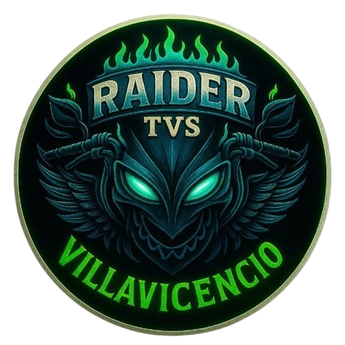
Raider Villavicencio
Villavicencio, Meta
Somos un grupo de motociclistas que convirtió la carretera en un punto de encuentro. Rodamos juntos, volvemos juntos.
Raider Villavicencio nació de algo muy simple: un grupo de amigos que preferían la carretera a quedarse en casa el domingo.
Con el tiempo esas salidas dejaron de ser un plan improvisado y se volvieron una costumbre, y después una comunidad. Hoy somos personas de distintas edades, oficios y motos, unidas por lo mismo: las ganas de rodar bien acompañados.
Para nosotros la moto no es solo un medio de transporte. Es la excusa perfecta para conocer el Llano, madrugar sin quejarse, parar a tomar tinto en cualquier estación y volver con historias que solo entiende quien estuvo ahí.
Rodamos en formación, nos esperamos, revisamos las motos antes de salir y nadie se queda solo en la vía. Si alguien pincha, paramos todos. Esa es la regla que nunca ha cambiado.
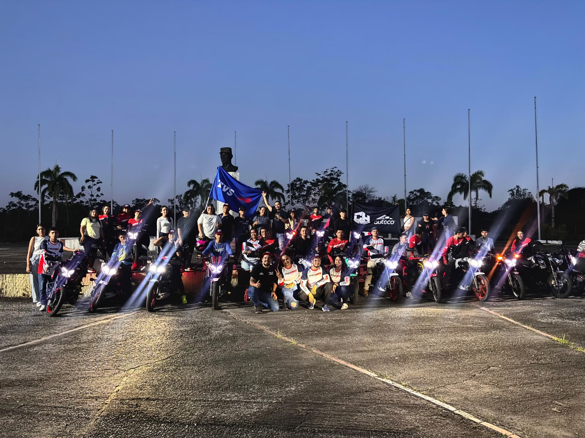
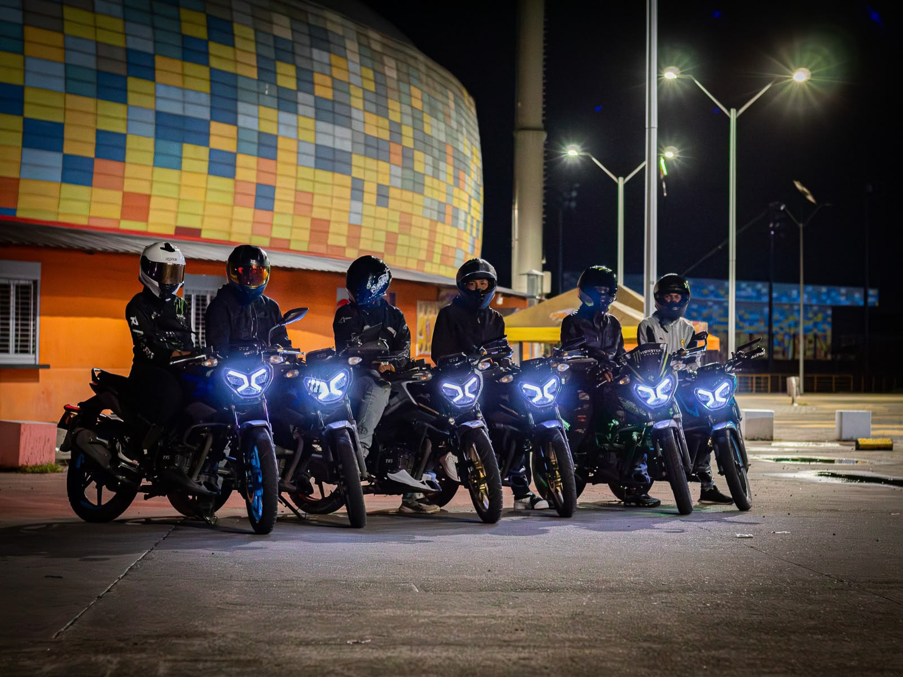
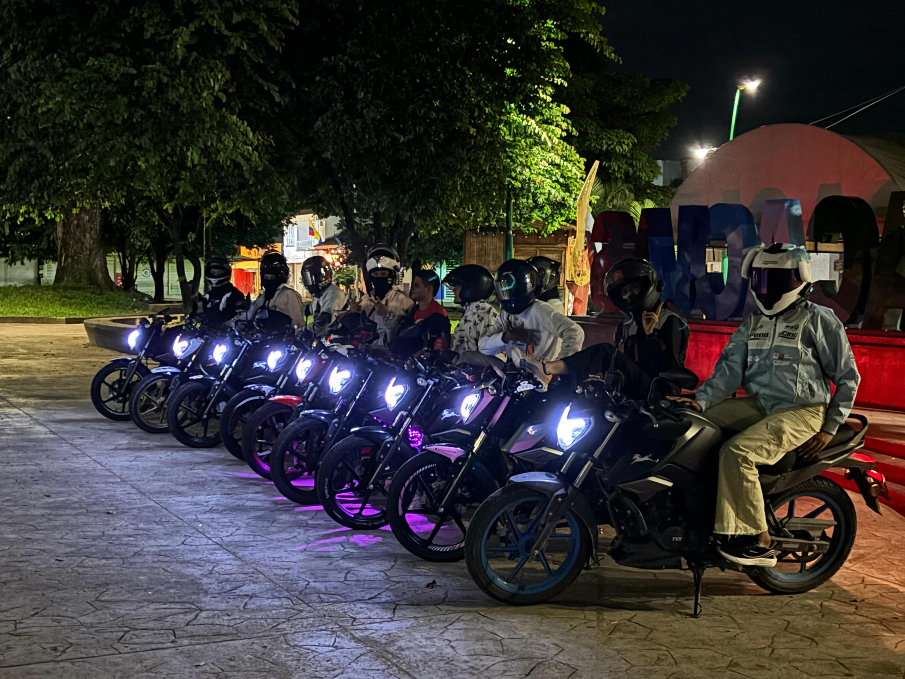
Seis cosas que no se negocian dentro del grupo, ni en la vía ni fuera de ella.
Nadie se queda atrás. Salimos en grupo y regresamos en grupo, sin importar cuánto tarde.
Entre nosotros, con los demás conductores y con la gente de cada pueblo al que llegamos.
Hablamos de motos todo el día y no nos cansamos. Cada salida es la mejor parte de la semana.
Casco siempre, luces encendidas, distancia prudente y revisión de la moto antes de arrancar.
Rutas nuevas, miradores, ríos y caminos destapados. Siempre hay un lugar más por conocer.
Más allá de las rodadas nos acompañamos: celebraciones, apoyo y actividades con la ciudad.
Momentos de nuestras salidas. Toca cualquier foto para verla en grande.
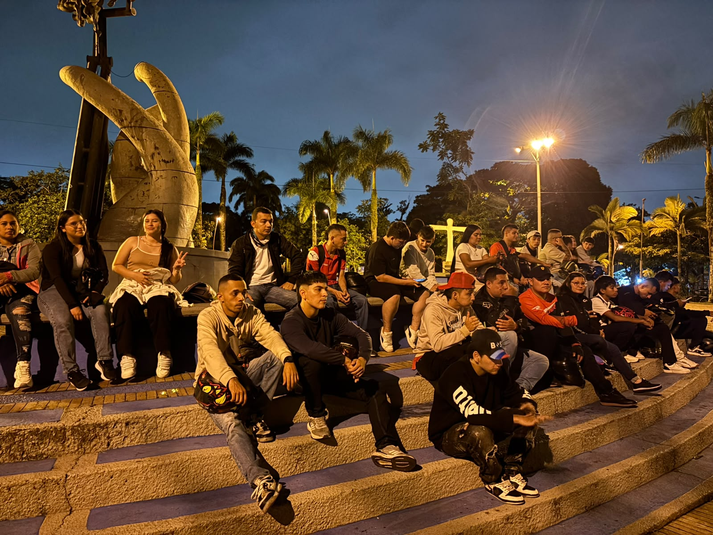
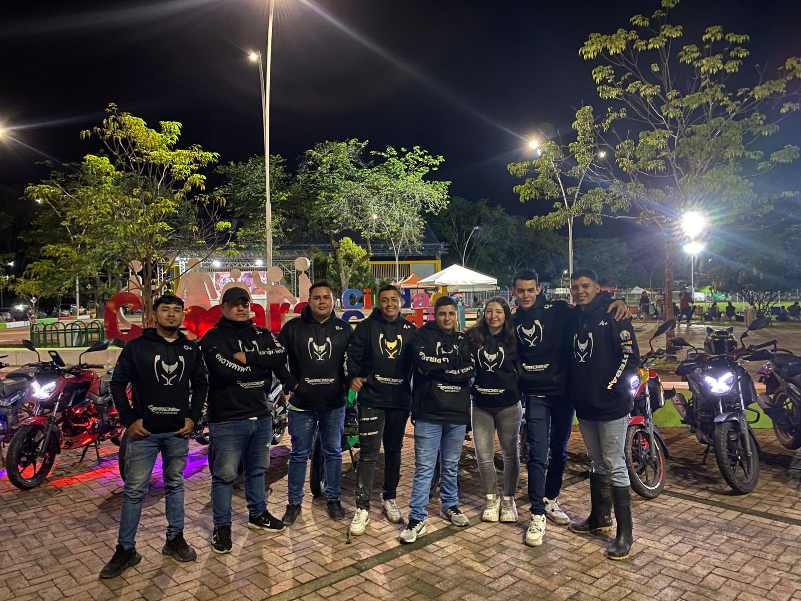
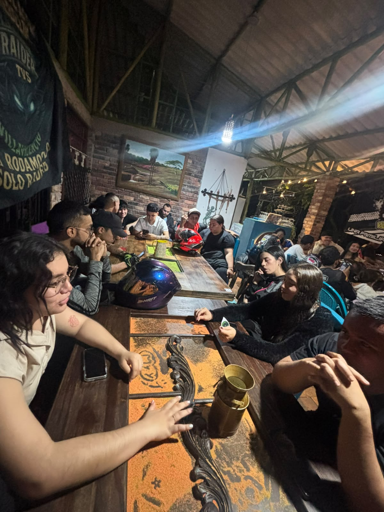
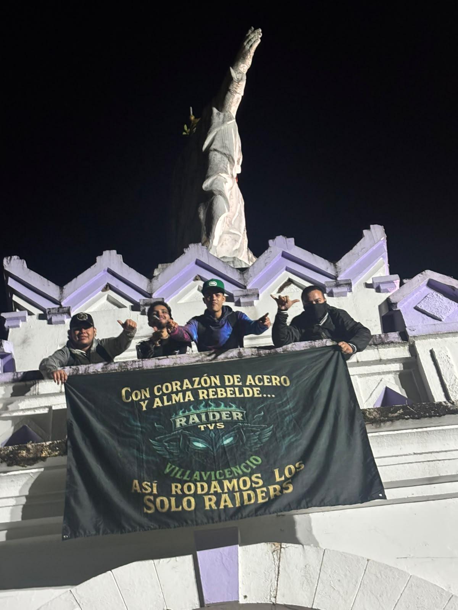
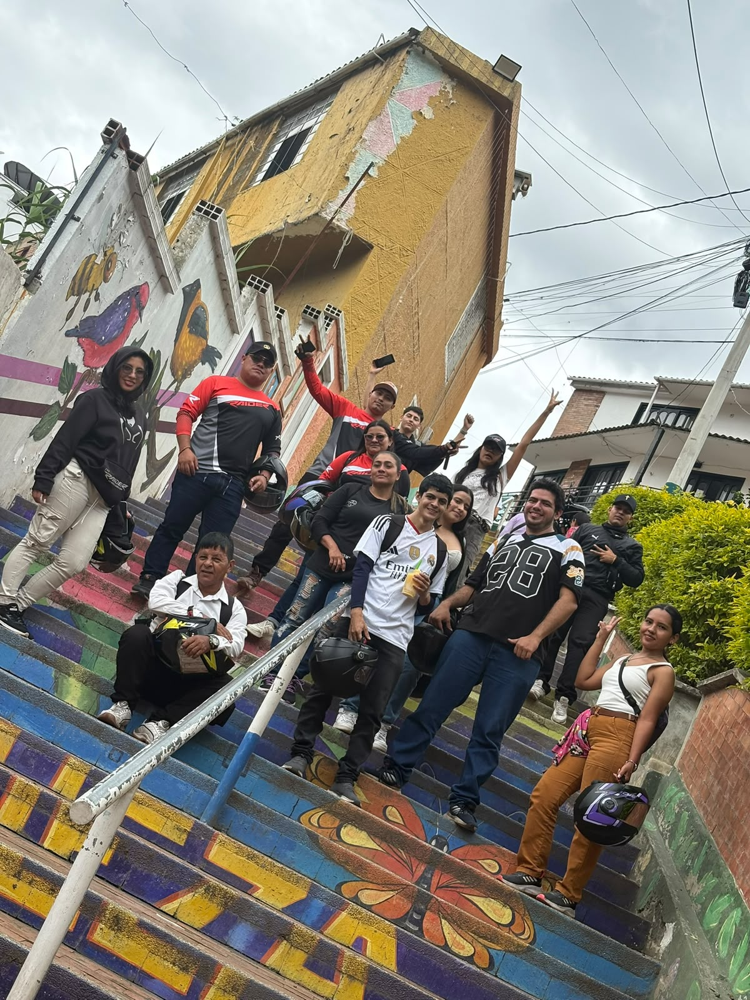
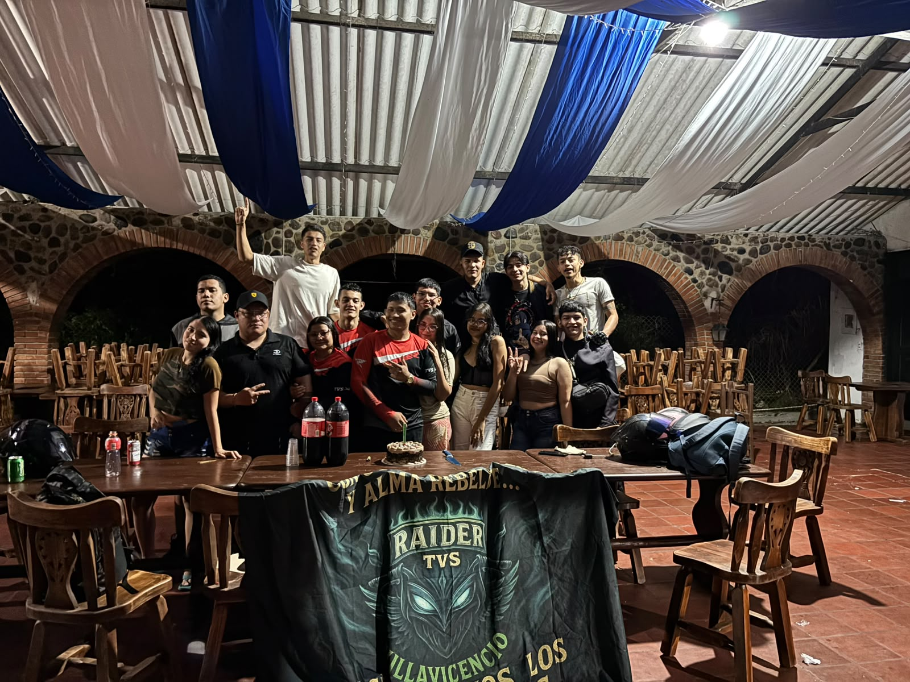
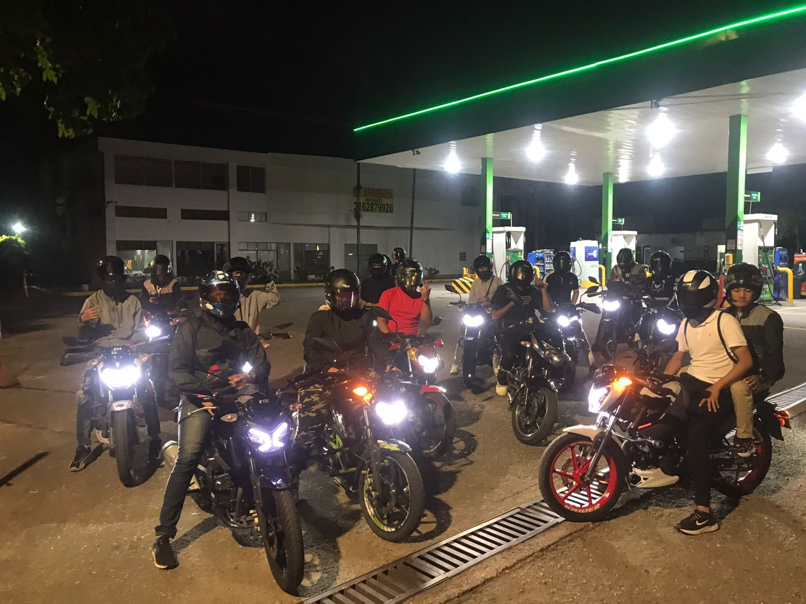
El requisito para unirse al grupo es tener una Moto TVS Raider, no otra marca.